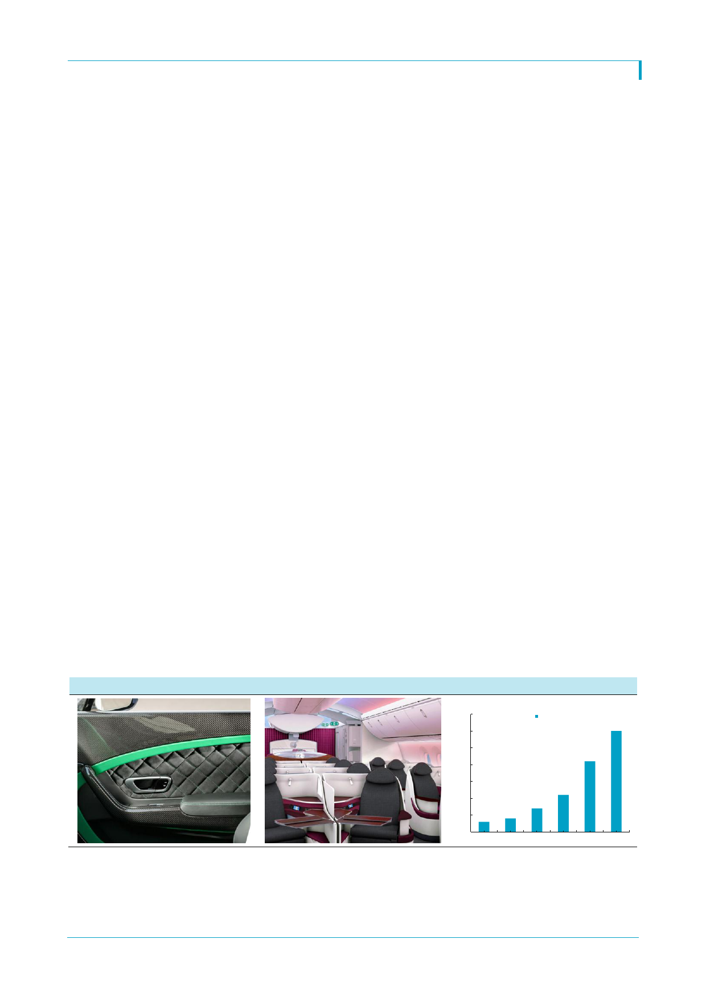

LG하우시스(108670)
Appendix) c2i
c2i는 직원 수 250명의 신생 업체이지만 탄소섬유 강화플라스틱(CFRP, Carbon fiber
reinforced plastic)등 경량화 신소재에 높은 기술력을 보유하고 있다. 외관과 인테리어 내
장재를 설계/자체 생산해 BMW, 포르쉐, 재규어 등 유럽 완성차 업체와 보잉, 에어버스
등 항공기 제작사에 납품한다. 고객이 부품의 기본 설계와 제품 요구사항을 제공하면 c2i
는 탄소섬유 기술과 자체 제작역량을 활용해 제품을 생산한다.
창업자는 Patrick Hessel로 케임브리지 대학의 창업 경진대회를 통해 창업했고 설비자금
마련 차원에서 LG하우시스에 매각되었다. c2i의 올해 예상 매출은 300억원에 불과하지만
영업이익률이 8~9%에 육박하고 지난 5년간 매출이 연평균 64% 성장했다. 이번 인수로
LG하우시스는 유럽시장 진출이 가능해졌다는 점에서 50% 지분에 486억원의 인수가격은
합리적이다.
c2i의 사업부는 자동차 소재, 항공 소재, 기타 위성통신 장비 사업부로 구성된다. 자동차
소재 부문에서는 시트커버와 내장재 및 장착 캐리어, 스포일러 등을 생산한다. 차체 구조
물을 생산하는데 있어 충돌 테스트를 포함한 CAE (Computer Aided Engineering)도 함
께 제공한다. 이를 통해 완성차 업체는 초기에 문제점을 발견하고 개발 비용을 절감할 수
있다. 항공 소재 부문에서는 탄소섬유/유리섬유를 이용한 좌석과 인테리어 제품, 소형 항
공기 구조물을 공급한다. 2017년 완공을 목표로 13만m2 규모의 구조물 생산 시설도 짓고
있다. 향후 여타 OEM업체로 고객을 다변화할 계획이다.
c2i가 강한 탄소섬유는 1990년대까지 높은 가격과 성능 부족으로 널리 사용되지 못하다가
2007년 보잉과 에어버스가 항공기에 탄소섬유복합소재를 사용하며 상용화 되기 시작해
우주 비행체나 방위산업용 제품생산에 사용된다. 에어버스 ‘A350’과 보잉 ‘B737’ 총 중량
의 50% 이상이 탄소섬유다. 이전에 쓰이던 알루미늄의 비중은 이제 20% 이하다. 자동차
산업에도 탄소섬유는 가장 주목 받는 신소재가 되고 있다.
탄소섬유 시장은 2014년 기준 20.8억달러로 2015~2020년 연평균 9.1%의 성장이 예상
된다. 주요 player는 Toray, Teijin, Mitsubishi Rayon 등 일본업체들이다. 탄소섬유는
일부 전기차나 수퍼카, FI에만 적용되다가 2014년 BMW i3의 메인 프레임에 쓰이며 점차
상용화 추세다. BMW i3의 배터리팩 무게는 235kg에 달해 일반 차량에 장착하면 차량 총
중량이 1.4톤을 넘는다. 그러나 양산 중인 i3의 중량은 1.3톤으로 일반 차량과 유사하다.
[그림 3] c2I 자동차 내장 인테리어
[그림 4] c2I 비행기 내장 인테리어 및 좌석
[그림 5] c2i 매출
(십억원)
35
연 매출
30
30
25
21
20
15
11
10
7
5
3
4
0
2011 2012 2013 2014 2015 2016
자료: c2i
3